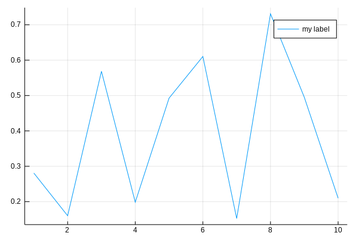

Plot Gallery
Julia Plots provides us with the capability to create visualizations of data.
Install Plots Package
First, Open the Julia Terminal (also known as REPL), you can follow the steps here.
At the Julia prompt in the REPL window, type the following:
julia> using PkgThis will tell Julia that you are going to use the package manager.
Then type the following to add Plots package:
julia> Pkg.add("Plots")Create Visualization
Remember to keep the REPL open as this is where any output from your program will be printed.
The first piece of code that you need to execute is this:
using PlotsThis tells Julia to load the library that we will use to create our visualizations.
Example
Let's walkthrough a simple program to understand this:
Write the following code.
using Plots
x = 1:10; y = rand(10); # These are the plotting data
plot(x,y, label="my label")Now Run this, you can follow the steps here.
You will get something like the following graph as a output in a new tab in VS Code:
